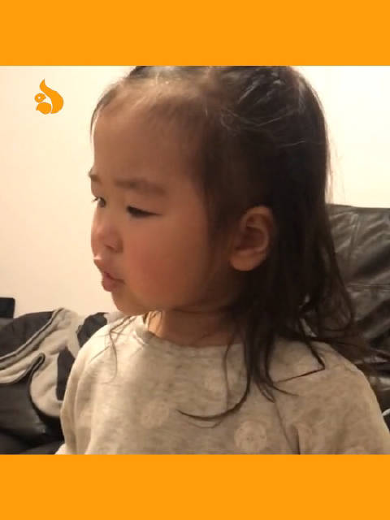

笑坏我了，最后那个小姑娘还会给她大姨下套呢。@松鼠视频:10后的孩子遇上90后的父母，这届父母怎么这么难带呢#10后孩子遇上90后父母# #10后的孩子遇上90父母# 松鼠视频的微博视频  1323万次播放 01:52
#创业# 我的好友是不加验证的，所以经常会遇到莫名其妙就被拉到了一个群里，之前会很愤怒的点击"删除并退出"今天忽然想开了，每次在退出前，我都在群里发一大段广告，留下我的联系方式，然后点击退出的时候就特别爽。